폐기물처리기사 (2012-03-04 기출문제)
1과목: 폐기물 개론
1. 함수율 50%인 쓰레기를 함수율 20%로 감소시킨다면 전체중량은? (단, 쓰레기 비중은 1.0으로 가정함)
- 처음의 약 52%로 된다.
- 처음의 약 57%로 된다.
- 처음의 약 63%로 된다.
- 처음의 약 68%로 된다.
(정답률: 알수없음)

2. 적환장의 설치가 필요한 경우와 가장 거리가 먼 것은?
- 고밀도 거주지역이 존재할 때
- 작은 용량의 수집 차량을 사용할 때
- 슬러지 수송이나 공기수송 방식을 사용할 때
- 불법투기와 다량의 어지러진 쓰레기들이 발생할 때
(정답률: 알수없음)
3. 청소상태와 관련된 지표인 CEI(CommunityEffects Index)를 계산하기 위한 식에 적용되는 인자와 가장 거리가 먼 것은?
- 가로 지역의 범위
- 가로의 총수
- 가로의 청결상태
- 가로 청소상태의 문제점 여부
(정답률: 알수없음)
4. 함수율 80%(중량비)인 슬러지 내 고형물은 비중이 2.5인 FS 1/3과 비중이 1.0인 VS 2/3로 되어 있다. 이 슬러지의 비중은? (단, 물의 비중은 1.0 이다.)
- 1.04
- 1.08
- 1.12
- 1.16
(정답률: 알수없음)
5. 다음과 같은 조건을 가진 지역에서 쓰레기를 수거하는데 회별 소요되는 시간은?
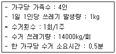
- 150분
- 200분
- 250분
- 300분
(정답률: 알수없음)
6. 수거대상 인구가 2000명인 어느 지역에서 4일 동안 발생한 쓰레기를 수거한 결과가 다음과 같다면 이 지역의 1일 1인당 쓰레기 발생량은?
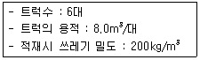
- 1.0 kg/인 ‧ 일
- 1.2 kg/인 ‧ 일
- 1.4 kg/인 ‧ 일
- 1.6 kg/인 ‧ 일
(정답률: 알수없음)
7. 다음 중 쓰레기의 발생량 예측에 적용하는 방법이 아닌 것은?
- 경향법
- 물질수지법
- 동적모사 모델
- 다중회귀 모델
(정답률: 알수없음)
8. 1일 폐기물발생량이 600톤인 도시에서 적재량 5톤 트럭으로 폐기물을 매립장까지 운반할 때 트럭의 운행시간 8시간/일, 운반거리 5km, 1회 왕복시간 20분, 적재시간 10분, 적하시간 10분, 예비차량 3대 라면 1일 소요 차량수는? (단, 기타 조건은 고려하지 않음)
- 10대
- 13대
- 16대
- 19대
(정답률: 알수없음)
9. 쓰레기의 성상분석 절차로 가장 옳은 것은?
- 시료→전처리→물리적조성→밀도측정→건조→분류
- 시료→전처리→건조→분류→물리적조성→밀도측정
- 시료→밀도측정→건조→분류→전처리→물리적조성
- 시료→밀도측정→물리적조성→건조→분류→전처리
(정답률: 알수없음)
10. 트롬멜 스크린에 대한 설명으로 옳지 않은 것은?
- 원통회전속도가 어느 정도까지 증가할수록 선별 효율이 증가하나 그 이상이 되면 막힘 현상이 일어난다.
- 최적속도는 [임계속도 × 1.45]로 나타낸다.
- 원통경사도가 크면 선별효율이 떨어진다.
- 스크린 중에서 선별효율이 우수하며 유지관리상의 문제가 적다.
(정답률: 77%)
11. 투입량이 1ton/h이고, 회수량이 600kg/h(그중 회수 대상물질은 540kg/h)이며 제거량은 400kg/h (그중 회수 대상물질은 50kg/h)일 때 Rietema식에 의한 선별 효율은?
- 76.9%
- 79.2%
- 81.3%
- 83.2%
(정답률: 알수없음)
12. 어느 폐기물을 압축하여 75%의 부피감소율을 얻었다면 압축비는?
- 3.0
- 3.5
- 4.0
- 4.5
(정답률: 알수없음)
13. 어떤 쓰레기의 입도를 분석하였더니 입도누적곡선상의 10%, 30%, 60%, 90%의 입경이 각각 2, 6, 16, 25mm이었다면 이 쓰레기의 균등계수는?
- 2.0
- 3.0
- 8.0
- 13.0
(정답률: 알수없음)
14. 쓰레기의 수거노선을 설정할 때 유의할 사항으로 옳지 않은 것은?
- 많은 양의 쓰레기 발생원은 하루 중 가장 나중에 수거한다.
- U자형 회전을 피하여 수거한다.
- 적은 양의 쓰레기가 발생하나 동일한 수거빈도를 받기를 원하는 적재지점은 가능한 한 같은 날 왕복 내에서 수거하도록 한다.
- 가능한 한 시계방향으로 수거노선을 정한다.
(정답률: 82%)
15. 전과정평가(LCA)를 구성하는 4부분 중, 조사분석 과정에서 확정된 자원요구 및 환경부하에 대한 영향을 평가하는 기술적, 정량적, 정성적 과정인 것은?
- impact analysis
- initiation analysis
- inventory analysis
- improvement analysis
(정답률: 알수없음)
16. 쓰레기를 압축시키기 전 밀도가 0.41ton/m3이었던 것이 압축기에 넣어 압축시킨 결과 0.8ton/m3으로 증가하였다. 이때 쓰레기 부피의 감소율은?
- 67.4%
- 62.4%
- 56.7%
- 48.8%
(정답률: 알수없음)
17. 음식쓰레기 30톤이 있다. 이 쓰레기의 고형분함량은 30%이고 소각을 위하여 수분함량이 20%가 되도록 건조시켰다. 건조 후 쓰레기의 중량은? (단, 쓰레기 비중은 1.0)
- 5.3톤
- 7.3톤
- 9.3톤
- 11.3톤
(정답률: 알수없음)
18. 폐기물 발생량에 영향을 미치는 인자에 대한 설명으로 옳은 것은?
- 대도시보다 중소도시의 발생량이 더 많다.
- 쓰레기통에 클수록 발생량은 줄어든다.
- 수거빈도가 클수록 발생량은 증가한다.
- 생활수준이 높아지면 발생량이 줄어든다.
(정답률: 알수없음)
19. 년간 3000000ton의 쓰레기를 1000명의 인부들이 매일 8시간 수거한다. 이 때 인부의 수거능력(MHT)은?
- 1.96 인 ‧ 시간/ton
- 1.96 인/시간 ‧ ton
- 0.97 인 ‧ 시간/ton
- 0.97 인/시간 ‧ ton
(정답률: 알수없음)
20. 선별방식 중 습식 분류법에 대한 설명으로 옳지 않은 것은?
- 유기물을 분류시키고자 하는 경우에 사용한다.
- 폐지로부터 펄프를 만들기 위한 경우에 사용한다.
- 습식방법에 의하여 분류된 물질은 건식에 의한 것보다 폭발의 위험성이 적다.
- 습식분류법은 먼지가 없고 경제적이므로 일반적으로 많이 사용된다.
(정답률: 36%)
2과목: 폐기물 처리 기술
21. 함수율이 96%인 슬러지 10L에 응집제를 가하여 침전 농축시킨 결과 상층액과 침전 슬러지의 용적비가 2:1이었다면 침전 슬러지의 함수율은? (단, 비중은 1.0 기준으로 하며 상층액 SS, 응집제량등 기타사항은 고려하지 않음)
- 84%
- 88%
- 92%
- 94%
(정답률: 알수없음)
22. 유기성폐기물 처리방법 중 퇴비화의 장‧단점으로 옳지 않은 것은?
- 생산된 퇴비는 비료가치는 낮다.
- 퇴비제품의 품질 표준화가 어렵다.
- 생산품인 퇴비는 토양의 이화학성질을 개선시키는 토양 개량제로 사용할 수 있다.
- 퇴비화 과정 중 80% 이상 부피가 크게 감소된다.
(정답률: 알수없음)
23. Soil Vapor Extraction(SVE) 기술에 대한 내용으로 옳지 않은 것은?
- 토양층이 치밀하여 기체 흐름이 어려운 곳에서는 적용이 어렵다.
- 지반구조에 상관없이 총 처리시간을 예측하기가 용이하다.
- 생물학적 처리효율을 높여준다.
- 오염물질의 독성은 변화가 없다.
(정답률: 알수없음)
24. 슬러지내의 물의 형태에 관한 설명으로 옳지 않는 것은?
- 부착수 : 고형물과 직접 결합해 있지 않기 때문에 농축 등의 방법으로 용이하게 분리할 수 있다.
- 모관결합수 : 미세한 슬러지 고형물의 입자 사이에 존재하는 수분이다.
- 모관결합수 : 모세관 현상을 일으켜서 모세관압으로 결합되어 있는 수분이다.
- 간극수 : 큰 고형물입자 간극에 존재하는 수분으로 많은 양을 차지한다.
(정답률: 알수없음)
25. 토양오염의 특성에 관한 설명으로 옳지 않은 것은?
- 오염경로가 다양하다.
- 피해발현이 완만하다.
- 오염의 인지가 용이하다.
- 원상복구가 어렵다.
(정답률: 알수없음)
26. 토양세척법의 처리효과가 가장 높은 토양입경정도는?
- 슬러지
- 점토
- 미사
- 자갈
(정답률: 알수없음)
27. 고화처리방법 중 자가 시멘트법에 관한 설명으로 옳지 않은 것은?
- 혼합률(MR)이 낮다.
- 탈수 등 전처리가 필요하다.
- 보조에너지가 필요하다.
- 연소가스 탈황시 발생된 슬러지 처리에 사용된다.
(정답률: 알수없음)
28. 연직차수막과 표면차수막에 대한 내용으로 옳지 않은 것은?
- 연직차수막은 지중에 수평방향의 차수층이 존재할 때 채용한다.
- 연직차수막은 지하수 집배수시설이 필요하다.
- 표면차수막은 차수막 단위면적당 공사비가 싸다.
- 표면차수막은 매립 전에는 보수가 용이하나 매립후는 어렵다.
(정답률: 알수없음)
29. 매립지의 침출수의 농도가 반으로 감소하는데 약 3년이 걸렸다면 이 침출수의 농도가 90% 감소하는데 걸리는 시간은? (단, 1차 반응기준)
- 약 10년
- 약 12년
- 약 14
- 약 16년
(정답률: 73%)
30. 다음 중 토양수분장력이 가장 낮은 토양 수분은?
- 모세관수
- 중력수
- 결합수
- 흡습수
(정답률: 알수없음)
31. 밀도가 1.5g/cm3인 폐기물 10kg에 고형물재료를 5kg 첨가하여 고형화 시킨 결과 밀도가 6.0g/cm3으로 증가하였다면 폐기물의 부피변화율(VCF)은?
- 0.48
- 0.42
- 0.38
- 0.32
(정답률: 알수없음)
32. 합성차수막인 CSPE의 장단점으로 옳지 않은 것은?
- 강도가 약하다.
- 접합이 용이하다.
- 기름, 탄화수소 및 용매류에 강하다.
- 산과 알칼리에 강하다.
(정답률: 알수없음)
33. 진공여과기 1대를 사용하여 슬러지를 탈수하고 있다. 다음과 같은 조건에서 건조고형물 기준의 여과속도 27kg/m2 ‧ hr인 진공여과기의 1일 운전시간은?
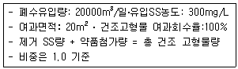
- 15.4 시간
- 13.2 시간
- 11.3 시간
- 9.5 시간
(정답률: 37%)
34. 매립지의 침출수의 특성이 COD/TOC=1.0,BOD/COD=0.03이라면 효율성이 가장 양호한 처리 공정은? (단, 매립연한은 15년 정도이며 COD는400mg/L)
- 역삼투
- 화학적 침전(석회투여)
- 화학적 산화
- 이온교환수지
(정답률: 알수없음)
35. 슬러지를 개량하는 목적으로 가장 적합한 것은?
- 슬러지의 탈수가 잘되게 하기 위함
- 탈리액의 BOD를 감소시키기 위함
- 슬러지 건조를 촉진하기 위함
- 슬러지의 악취를 줄이기 위함
(정답률: 알수없음)
36. 어느 도시에 사용할 매립지의 총용량은 6132000m3이며 그 도시의 쓰레기 배출량은 3kg/인‧일이다. 매립지에서 압축에 의한 쓰레기 부피 감소율이 30%일 경우 이 매립지를 사용할 수 있는 년수는? (단, 수거대상인구 800000명, 발생 쓰레기밀도 500kg/m3 으로 함)
- 4
- 5
- 6
- 7
(정답률: 알수없음)
37. 포도당(C6H12O6)으로 구성된 유기물 3kg이 혐기성 미생물에 의해 완전히 분해되어 생성되는 메탄의 용적(Sm3)은?
- 1.12
- 1.37
- 1.52
- 1.83
(정답률: 알수없음)
38. 고형화 처리 중 시멘트 기초법에서 가장 흔히 사용되는 포틀랜드 시멘트 화합물 조성 중 가장 많은 부분을 차지하고 있는 것은?
- 2SiO2 ‧ Fe2O3
- 3CaO ‧ SiO2
- 2CaO ‧ MgO
- 3CaO ‧ Fe2O3
(정답률: 알수없음)
39. 다음은 매립쓰레기의 혐기성 분해과정을 나타낸 반응식이다. 발생가스 중의 메탄 함유율(발생량부피%)을 구하는 식(③)으로 맞는 것은?
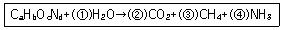
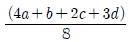
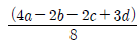
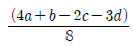
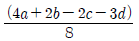
(정답률: 알수없음)
40. 어느 지역에서 매립에 의해 처리하고자 하는 폐기물 양은 1일 300ton이다. 이를 도랑식 매립법(Trench Methods)에 의해 매립하고자 할 때 발생폐기물 밀도 650kg/m3, 부피감소율 45%, Trench 유효깊이는 1.5m, 매립면적 중 Trench 점유율이 80%라면, 1년간 소요 부지면적은?
- 약 41500m2
- 약 52500m2
- 약 65500m2
- 약 77200m2
(정답률: 알수없음)
3과목: 폐기물 소각 및 열회수
41. 배기가스의 분석치가 CO2 20%, O2 10%, N2 80%이면 연소시 공기비(m)는?
- 약 1.38
- 약 1.54
- 약 1.76
- 약 1.89
(정답률: 37%)
42. 유황 함량이 2%인 벙커C유 1.0ton을 연소시킬 경우 발생되는 SO2의 양은? (단, 황성분 전량이 SO2로 전환됨)
- 30kg
- 40kg
- 50kg
- 60kg
(정답률: 알수없음)
43. 유동층 소각로에 대한 설명으로 옳지 않은 것은?
- 기계적 구동부분이 적어 고장율이 낮다.
- 상으로부터 찌꺼기의 분리가 어렵다.
- 과잉공기량이 높아 NOx가 다량 배출된다.
- 연소효율이 높아 미연소분의 배출이 적어 2차 연소실이 불필요하다.
(정답률: 50%)
44. 페놀(C6H5OH) 188g을 무해화하기 위하여 완전 연소시켰을 때 발생되는 CO2의 발생량은?
- 132g
- 264g
- 528g
- 1⑤6g
(정답률: 알수없음)
45. 쓰레기 소각능력이 100(kg/m2‧hr)이며, 소각할 쓰레기량이 20(ton/day)인 경우, 1일 20시간 가동시화격자의 면적(m2)은?
- 5
- 10
- 15
- 20
(정답률: 64%)
46. 저위발열량 10000(kcal/kg)의 중유를 연소시키는데 필요한 이론공기량은?
- 8.5 (Sm3/kg)
- 10.5 (Sm3/kg)
- 12.5 (Sm3/kg)
- 14.5 (Sm3/kg)
(정답률: 50%)
47. 어떤 폐기물의 원소조성이 다음과 같을 때 이론 공기량은?
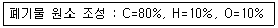
- 약 8.3kg/kg
- 약 10.3kg/kg
- 약 12.3kg/kg
- 약 14.3kg/kg
(정답률: 알수없음)
48. 백필터를 이용하여 가스유량이 100m3/min인 함진가스를 2.0cm/sec의 여과속도로 처리하고자 한다. 소요되는 여과포의 유효면적(m2)은?
- 83.3
- 94.5
- 111.2
- 124.3
(정답률: 알수없음)
49. 프로판(C3H8) 1kg을 완전 연소시 발생하는 CO2량(kg)과 아세틸렌(C2H2) 1kg을 완전 연소시 발생한 CO2량(kg)의 비는? (단, 아세틸렌 연소시 CO2량/프로판 연소시 CO2량)
- 약 1.22
- 약 1.13
- 약 1.01
- 약 0.92
(정답률: 알수없음)
50. 증기 터어빈에 대한 설명으로 옳지 않은 것은?
- 증기작동방식으로 분류하면 충동 터어빈, 반동 터어빈, 혼합식 터어빈으로 나누어진다.
- 증기유동방향으로 분류하면 축류터어빈, 반경류 터어빈으로 나누어진다.
- 증기유동방향으로 분류하면 축류터어빈, 반경류 터어빈으로 나누어진다.
- 흐흡수로 분류하면 단류 터어빈, 복류 터어빈으로 나누어진다.
(정답률: 알수없음)
51. 석탄의 탄화도가 증가하면 감소하는 것은?
- 휘발분
- 착화온도
- 고정탄소
- 발열량
(정답률: 50%)
52. 밀도가 800kg/m3인 폐기물을 처리하고 소각로에서 질량감소율은 85%이고 부피감소율은 90%이었을 경우 이 소각로에 발생하는 소각재의 밀도는?
- 1500kg/m3
- 1400kg/m3
- 1300kg/m3
- 1200kg/m3
(정답률: 알수없음)
53. 다음 중 액체연료인 석유류에 관한 설명으로 옳지 않은 것은?
- 비중이 커지면 탄화수소비(C/H)가 커진다.
- 비중이 커지면 발열량이 감소한다.
- 점도가 작아지면 인화점이 높아진다.
- 점도가 작아지면 유동성이 좋아져 분무화가 잘된다.
(정답률: 알수없음)
54. 열교환기 중 과열기에 관한 설명으로 옳지 않은 것은?
- 과열기는 그 부착 위치에 따라 전열형태가 다르다.
- 과열기의 재료는 탄소강을 비롯하여 니켈, 몰리브덴, 바나듐 등을 함유한 특수 내열 강관을 사용한다.
- 일반적으로 보일러의 부하가 높아질수록 대류과열기에 의한 과열온도는 저하하는 경향이 있다.
- 방사형과열기는 화실의 천정부 또는 로벽에 배치되며 주로 화염의 방사열을 이용한다.
(정답률: 40%)
55. 폐처리가스량이 5400 Sm3/hr인 스토카식 소각시설의 굴뚝에 정압을 측정하였더니 20mmH2O였다. 여유율 20%인 송풍기를 사용할 경우 필요한 소요동력은? (단 송풍기 정압효율 80%, 전동기 효율70%)
- 약 0.63 kW
- 약 1.32 kW
- 약 2.46 kW
- 약 3.35 kW
(정답률: 알수없음)
56. 구형 입자 분진이 최초의 입경에서 1.8배로 되면, 침강속도는 몇 배로 되는가? (단, 비중은 동일하고 stokes법칙이 적용된다.)
- 6.44배
- 4.36배
- 3.24배
- 2.82배
(정답률: 알수없음)
57. 다단로 연소방식의 설명 중 옳지 않은 것은?
- 다단로는 내화물을 입힌 가열판, 중앙의 회전축, 일련의 평판상을 구성하는 교반팔로 구성되어 있다.
- 천연가스, 프로판, 오일, 폐유 등 다양한 연료를 사용할 수 있다.
- 물리, 화학적 성분이 다른 각종 폐기물을 처리할 수 있다.
- 온도반응이 신속하여 보조연료사용 조절이 용이하다.
(정답률: 60%)
58. 목재류 쓰레기 조성을 원소분석한 결과 중량비가 C:69%, H:6%, O:18%, N:5%, S:2% 였다. 목재류 쓰레기 300kg 연소할 때 필요한 이론 산소량(Sm3)은?
- 약 431
- 약 432
- 약 454
- 약 481
(정답률: 알수없음)
59. [반응열의 양은 반응이 일어나는 과정에 무관하고, 반응 전후에 있어서의 물질 및 그 상태에 의하여 결정된다.] 위의 내용으로 옳은 법칙은?
- Graham의 법칙
- Henry의 법칙
- Hess의 법칙
- Le Chatelier의 법칙
(정답률: 알수없음)
60. 표준상태(0℃, 1기압)에서 어떤 배기가스 내에 CO2 농도가 0.⑤%라면 몇 mg/m3에 해당되는가?
- 832
- 982
- 1124
- 1243
(정답률: 알수없음)
4과목: 폐기물 공정시험기준(방법)
61. 함수율 85%인 시료인 경우, 용출시험결과에 시료중의 수분함량 보정을 위하여 곱하여야 하는 값은?
- 0.5
- 1.0
- 1.5
- 2.0
(정답률: 알수없음)
62. 온도의 표시방법으로 옳지 않는 것은?
- 실온은 1~25℃로 한다.
- 찬곳은 따로 규정이 없는 한 0~15℃의 곳을 뜻한다.
- 온수는 60~70℃를 말한다.
- 냉수는 15℃ 이하를 말한다.
(정답률: 알수없음)
63. 중량법으로 기름성분을 측정할 때 시료채취 및 관리에 관한 내용으로 옳은 것은?
- 시료는 6시간 이내 증발처리를 하여야 하나 최대한 24시간을 넘기지 말아야 한다.
- 시료는 8시간 이내 증발처리를 하여야 하나 최대한 24시간을 넘기지 말아야 한다.
- 시료는 12시간 이내 증발처리를 하여야 하나 최대한 7일을 넘기지 말아야 한다.
- 시료는 24시간 이내 증발처리를 하여야 하나 최대한 7일을 넘기지 말아야 한다.
(정답률: 알수없음)
64. 다음은 자외선/가시선 분광법을 이용한 카드뮴 측정에 관한 설명이다. ( )안에 옳은 내용은?
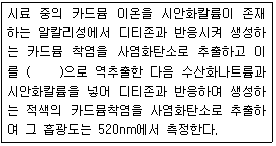
- 염화제일주석산 용액
- 부틸알콜
- 타타르산 용액
- 에틸알콜
(정답률: 알수없음)
65. ‘비함침성 고형폐기물’의 용어정의로 옳은 것은?
- 금속판, 구리선 등 기름을 흡수하지 않는 평면 또는 비평면형태의 변압기 외부부재를 말한다.
- 금속판, 구리선 등 기름을 흡수하지 않는 평면 또는 비평면형태의 변압기 내부부재를 말한다.
- 금속판, 구리선 등 수분을 흡수하지 않는 평면 또는 비평면형태의 변압기 외부부재를 말한다.
- 금속판, 구리선 등 수분을 흡수하지 않는 평면 또는 비평면형태의 변압기 내부부재를 말한다.
(정답률: 알수없음)
66. 청석면의 형태와 색상으로 옳지 않는 것은? (단, 편광현미경법 기준)
- 꼬인 물결 모양의 섬유
- 다발 끝은 분산된 모양
- 긴 섬유는 만곡
- 특징적인 청색과 다색성
(정답률: 알수없음)
67. 중량법을 이용하여 강열감량 및 유기물함량을 측정할 때 시료를 전기로에서 강열하기 전에 시료에 넣어 가열하여 탄화시키는 시약은?
- 질산암모늄용액(5%)
- 질산암모늄용액(25%)
- 과염소산용액(5%)
- 과염소산용액(25%)
(정답률: 알수없음)
68. 다음의 시료채취 및 용출시험에 관한 내용 중 옳은 것은?
- 유기인 실험을 위한 시료의 채취시는 폴리에틸렌병을 사용하여야 한다.
- 시료 채취 후 코르크 마개를 사용하여 밀봉하여 고무마개는 비닐을 씌워 사용하여야 한다.
- 대상 폐기물의 양이 10톤인 경우에 시료 최소수는 14개이다.
- 용출시험방법으로 액상 폐기물의 지정폐기물 여부를 판정한다.
(정답률: 알수없음)
69. 유리전극법을 이용하여 수소이온농도를 측정할때 적용 범위 기준으로 옳은 것은?
- pH를 0.01까지 측정한다.
- pH를 0.⑤까지 측정한다.
- pH를 0.1까지 측정한다.
- pH를 0.5까지 측정한다.
(정답률: 67%)
70. 반고상 폐기물이라 함은 고형물의 함량이 몇%인 것을 말하는가?
- 5% 이상 10% 미만
- 5% 이상 15% 미만
- 5% 이상 20% 미만
- 5% 이상 25% 미만
(정답률: 알수없음)
71. 다음은 폐기물 용출시험에 관한 내용이다. ( )안에 옳은 내용은?
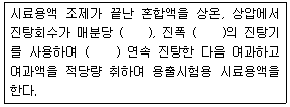
- 약 200회, 4~5cm, 6시간
- 약 200회, 4~5cm, 4시간
- 약 300회, 5~6cm, 6시간
- 약 300회, 5~6cm, 4시간
(정답률: 알수없음)
72. 총칙에서 규정하고 있는 사항 중 옳은 것은?
- 시험에 사용하는 시약은 따로 규정이 없는 한 2급 이상 또는 이와 동등한 규격의 시약을 사용한다.
- ‘밀폐용기’라 함은 취급 또는 저장하는 동안에 이물질이 들어가거나 또는 내용물이 손실되지 아니하도록 보호하는 용기를 말한다.
- ‘무게를 정밀히 단다’라 함은 규정된 수치의 무게를 0.1mg까지 다는 것을 말한다.
- ‘정확히 취하여’라 함은 규정한 양의 액체를 메스실린더로 눈금까지 취하는 것을 말한다.
(정답률: 40%)
73. 기체크로마토그래피법으로 측정하여야 하는 시험 항목이 아닌 것은?
- 시안
- PCBs
- 유기인
- 휘발성 저급 염소화 탄화수소류
(정답률: 알수없음)
74. 회분식 연소방식의 소각재 반출 설비에서의 시료 채취에 관한 내용으로 옳은 것은?
- 하루 동안의 운전횟수에 따라 매 운전 시마다 2회 이상 채취하는 것을 원칙으로 한다.
- 하루 동안의 운전횟수에 따라 매 운전 시마다 3회 이상 채취하는 것을 원칙으로 한다.
- 하루 동안의 운전시간에 따라 매 운전 시마다 2회 이상 채취하는 것을 원칙으로 한다.
- 하루 동안의 운전횟수에 따라 매 운전 시마다 3회 이상 채취하는 것을 원칙으로 한다.
(정답률: 알수없음)
75. 다음은 자외선/가시선 분광법으로 비소를 측정하는 방법이다. ( )안에 옳은 내용은?
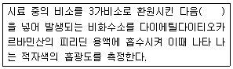
- 과망간산칼륨 용액
- 과산화수소수 용액
- 요오드
- 아연
(정답률: 알수없음)
76. 다음은 정량한계(LOQ)에 관한 내용이다. ( )안에 내용으로 옳은 것은?
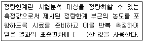
- 3배
- 5배
- 10배
- 15배
(정답률: 알수없음)
77. 다음은 자외선/가시선 분광법을 적용한 구리 측정방법이다. ( )안에 내용으로 옳은 것은?
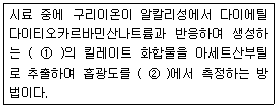
- ① 적자색 ② 540nm
- ① 적자색 ② 440nm
- ① 황갈색 ② 540nm
- ① 황갈색 ② 440nm
(정답률: 알수없음)
78. 감염성 미생물의 분석방법과 가장 거리가 먼 것은?
- 아포균 검사법
- 열멸균 검사법
- 세균배양 검사법
- 멸균테이프 검사법
(정답률: 알수없음)
79. 폐기물이 4.5톤 차량에 적재되어 있을 때 시료를 채취하는 방법에 관한 설명으로 옳은 것은?
- 평면상에서 6등분, 수직명상에서 9등분한 후 각등분마다 시료채취
- 평면상에서 9등분, 수직면상에서 6등분한 후 각등분마다 시료채취
- 평면상에서 6등분한 후 각 등분마다 시료채취
- 평면상에서 9등분한 후 각 등분마다 시료채취
(정답률: 알수없음)
80. 수은을 원자흡수분광광도법으로 측정할 때 시료중 수은을 금속수은으로 환원시키기 위해 넣는 시약은?
- 아연분말
- 이염화주석
- 시안화칼륨
- 과망간산칼륨
(정답률: 60%)
5과목: 폐기물 관계 법규
81. 기술관리인을 두어야 할 폐기물처리시설 기준으로 옳지 않는 것은? (단, 폐기물처리업자가 운영하는 폐기물처리시설은 제외)
- 시멘트 소성로(폐기물을 연료로 사용하는 경우로 한정한다)로서 1일 재활용능력이 10톤 이상인 시설
- 용해로(폐기물에서 비철금속을 추출하는 경우로 한정한다)로서 시간당 재활용능력이 600킬로그램 이상인 시설
- 멸균분쇄시설로서 시간당 처분능력이 100킬로그램 이상인 시설
- 사료화, 퇴비화 또는 연료화 시설로서 1일 재활용 능력이 5톤 이상인 시설
(정답률: 알수없음)
82. 폐기물처리업자의 폐기물보관량 및 처리기한에 관한 내용으로 옳은 것은? (단, 폐기물 수집, 운반업자가 임시보관장소에 폐기물을 보관하는 경우, 의료폐기물 외의 폐기물 기준)
- 중량 250톤 이하이고 용적이 200세제곱미터 이하, 5일 이내
- 중량 250톤 이하이고 용적이 300세제곱미터 이하, 5일 이내
- 중량 450톤 이하이고 용적이 200세제곱미터 이하, 5일 이내
- 중량 450톤 이하이고 용적이 300세제곱미터 이하, 5일 이내
(정답률: 알수없음)
83. 폐기물관리법이 적용되지 아니하는 물질에 대한 기준으로 옳지 않는 것은?
- 용기에 들어 있지 아니한 기체상태의 물질
- 하수도법에 따라 공공수역으로 배출되는 폐수
- 군수품관리법에 따라 폐기되는 탄약
- 원자력안전법에 따른 방사성 물질과 이로 인하여 오염된 물질
(정답률: 알수없음)
84. 폐기물 처리시설인 재활용시설 중 기계적 재활용 시설의 기준으로 옳지 않는 것은?
- 절단시설(동력 10마력 이상인 시설로 한정한다)
- 용융, 용해시설(동력 10마력 이상인 시설로 한정한다)
- 압축, 압출, 성형, 주조시설(돌력 10마력 이상인 시설로 한정한다)
- 파쇄, 분쇄, 탈피 시설(동력 10마력 이상인 시설로 한정한다)
(정답률: 알수없음)
85. 폐기물처리업의 업종구분과 영업내용으로 옳지않는 것은?
- 폐기물종합재활용업 : 폐기물 재활용시설을 갖추고 중간재활용업과 최종재활용업을 함께하는 영업
- 폐기물최종재활용업 : 폐기물 재활용시설을 갖추고 최종재활용품을 만드는 영업
- 폐기물중간재활용업 : 폐기물 재활용시설을 갖추고 중간 가공 폐기물을 만드는 영업
- 폐기물 수집, 운반업 : 폐기물을 수집하여 재활용 또는 처분 장소로 운반하거나 폐기물을 수출하기 위하여 수집, 운반하는 영업
(정답률: 알수없음)
86. 의료폐기물은 [환경부장관이 지정한 기관이나 단체]가 환경부장관이 정하여 고시한 검사기준에 따라 검사한전용용기만을 사용하여 처리하여야 한다. 다음 중 환경부장관이 지정한 기관이나 단체와 가장 거리가 먼 것은?
- 한국환경공단
- 한국화학융합시험연구원
- 한국건설생활환경시험연구원
- 한국재생표준시험연구원
(정답률: 60%)
87. 지정폐기물 외의 사업장폐기물의 분류번호 중 유기성 오니류에 해당하는 것은?
- 50-01-00
- 51-01-00
- 52-01-00
- 53-01-00
(정답률: 알수없음)
88. 환경부 장관이 수립하는 폐기물관리 종합계획에 포함되어야 하는 사항과 가장 거리가 먼 것은?
- 종합계획 평가 전망
- 부분별 폐기물 관리 정책
- 종합계획의 기조
- 재원 조달 계획
(정답률: 알수없음)
89. 폐기물처리업의 변경허가 사항과 가장 거리가 먼 것은? (단, 폐기물 중간처분업, 폐기물 최종처분업 및 폐기물 종합처분업인 경우)
- 처분대상 폐기물의 변경
- 주차장 소재지의 변경
- 운반차량(임시차량은 제외한다)의 증차
- 폐기물 처분시설의 신설
(정답률: 67%)
90. 폐기물 중간처분시설 중 화학적 처분시설로 분류되는 시설은?
- 고형화시설
- 유수분리시설
- 연료화시설
- 정제시설
(정답률: 알수없음)
91. 폐기물 처분시설 또는 재활용시설 중 의료폐기물을 대상으로 하는 시설의 기술관리인 자격기준에 해당하지 않는 자격은?
- 폐기물처리산업기사
- 수질환경산업기사
- 임상병리사
- 위생사
(정답률: 70%)
92. 대통령령으로 정하는 폐기물처리시설을 설치, 운영하는 자는 그 시설의 유지관리에 관한 기술업무를 담당하게 하기 위해 기술관리인을 임명하거나 기술관리능력이 있다고 대통령령으로 정하는 자와 기술관리 대행계약을 체결하여야 한다. 이를 위반하여 기술관리인을 임명하지 아니하고 기술관리 대행 계약을 체결하지 아니한 자에 대한 과태료 처분 기준은?
- 2백만원 이하의 과태료
- 3백만원 이하의 과태료
- 5백만원 이하의 과태료
- 1천만원 이하의 과태료
(정답률: 알수없음)
93. 의료폐기물(위해의료폐기물) 중 [시험, 검사 등에 사용된 배양액, 배양용기, 보관균주, 폐시험관, 슬라이드, 커버슬라이스, 폐배지, 폐장갑]이 해당되는 것은?
- 병리계폐기물
- 손상성폐기물
- 위생계폐기물
- 보건성폐기물
(정답률: 알수없음)
94. 폐기물처리시설 주변지역 영향조사 기준 중 조사지점에 관한 기준으로 옳지 않은 것은?
- 미세먼지와 다이옥신 조사지점은 해당시설에 인접한 주거지역 중 3개소 이상 지역의 일정한 곳으로 한다.
- 악취 조사지점은 매립시설에 가장 인접한 주거지역에서 냄새가 가장 심한 곳으로 한다.
- 토양 조사지점은 매립시설에 인접하여 토양오염이 우려되는 4개소 이상의 일정한 곳으로 한다.
- 지하수 조사지점은 매립시설의 주변에 설치된 2개소 이상의 지하수 검사정으로 한다.
(정답률: 알수없음)
95. 폐기물 처분시설 또는 재활용시설의 관리기준에서 관리형매립시설에서 발생하는 침출수의 배출허용 기준으로 옳은 것은? (단, 화학적산소요구량(mg/L), 과망간산칼륨법에 따른 경우, 1일 침출수 배출량은 2000m3미만, 가지역)
- 80
- 100
- 120
- 150
(정답률: 30%)
96. 누구든지 특별자치도지사, 시장, 군수, 구청장이나 공원, 도로 등 시설의 관리자가 폐기물의 수집을 위해 마련한 장소나 설비 외의 장소에 폐기물을 버려서는 아니된다. 이를 위반하여 사업장폐기물을 버린 자에 대한 벌칙기준으로 옳은 것은? (단, 징역형과 벌금형 병과 가능 기준)
- 2년 이하의 징역이나 1천 5백만원 이하의 벌금
- 3년 이하의 징역이나 2천만원 이하의 벌금
- 5년 이하의 징역이나 3천만원 이하의 벌금
- 7년 이하의 징역이나 5천만원 이하의 벌금
(정답률: 알수없음)
97. 음식물류 폐기물 처리시설의 검사기관으로 옳은 것은?
- 보건환경연구원
- 한국산업기술시험원
- 한국농어촌공사
- 수도권매립지관리공사
(정답률: 알수없음)
98. 지정폐기물 중 유해물질함유 폐기물(환경부령으로 정하는 물질을 함유한 것으로 한정한다)에 관한 기준으로 옳지 않은 것은?
- 광재(철광 원석의 사용으로 인한 고로슬래그는 제외한다)
- 분진(대기오염 방지시설에서 포집된 것으로 한정하되, 소각시설에서 발생되는 것은 제외한다)
- 폐내화물 및 재벌구이 전에 유약을 바른 도자기조각
- 폐흡착제 및 폐흡수제(광물유 정제에 사용된 고화폐기물은 제외한다)
(정답률: 40%)
99. 용어의 정의로 옳지 않는 것은?
- 폐기물감량화시설 : 생산 공정에서 발생하는 폐기물의 양을 줄이고, 사업장 내 재활용을 통하여 폐기물 배출을 최소화 하는 시설로서 대통령령으로 정하는 시설을 말한다.
- 생활폐기물 : 사업장폐기물외의 폐기물을 말한다.
- 처리 : 폐기물을 조각, 중화, 파쇄, 고형화 등의 중간처분과 매립하거나 해역으로 배출하는 최종처분을 말한다.
- 폐기물처리시설 : 폐기물의 중간처분시설, 최종처분시설 및 재활용시설로서 대통령령으로 정하는 시설을 말한다.
(정답률: 알수없음)
100. 한국폐기물협회의 업무와 가장 거리가 먼 것은?
- 폐기물산업의 발전을 위한 지도 및 조사, 연구
- 폐기물 관련 홍보 및 교육, 연수
- 폐기물정책개발을 위한 위탁 사업
- 폐기물 관련 국제교류 및 협력
(정답률: 46%)
함수율을 20%로 감소시키면, 쓰레기 중 20%만 실제 쓰레기이고, 나머지 80%는 빈 공간이다. 따라서 전체 중량 중 쓰레기의 비중은 1.0 * 0.2 = 0.2이다.
따라서 처음의 쓰레기 비중 0.5에서 0.2로 감소하면, 전체 중량 중 쓰레기의 비중은 0.2 / 0.5 = 0.4이다. 이를 백분율로 나타내면 약 80%이다.
하지만 문제에서는 쓰레기 비중이 1.0으로 가정되어 있으므로, 전체 중량 중 쓰레기의 비중이 0.2가 되면 전체 중량은 처음의 0.2 / 0.5 = 0.4배가 된다. 이를 백분율로 나타내면 약 63%이다. 따라서 정답은 "처음의 약 63%로 된다."이다.